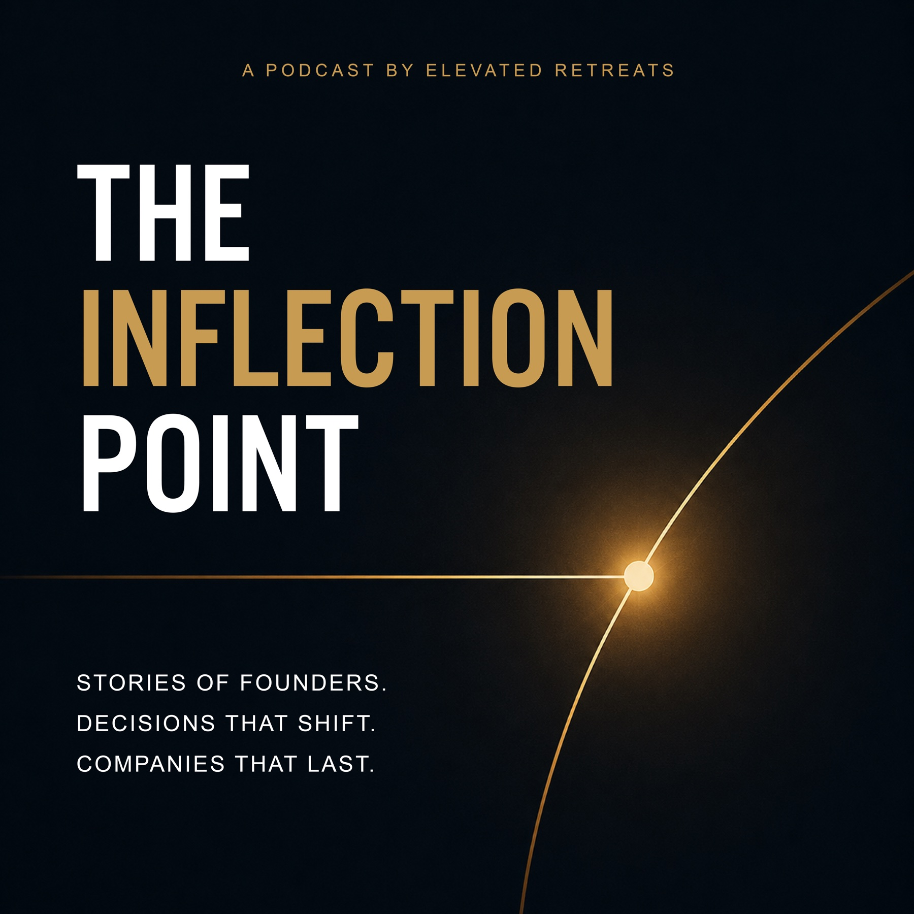
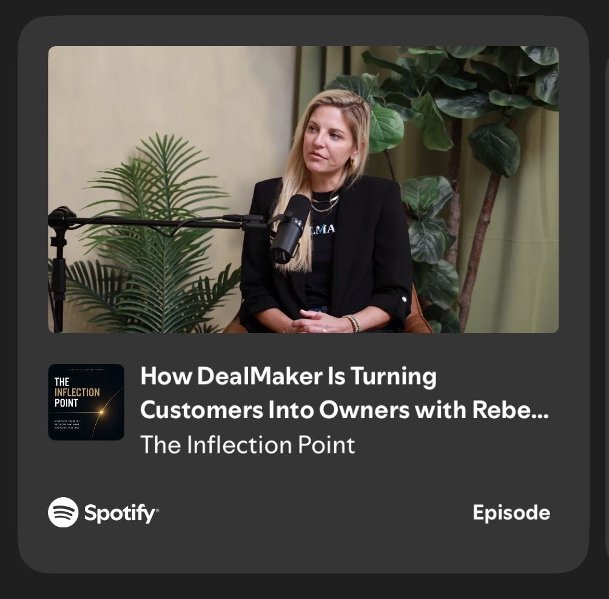

Podcast Launch & Creative Direction
The Inflection Point
The Inflection Point is a founder-led podcast about the moments that change the direction of a company, and the people making those decisions.
Starting with the cover, we expanded its fine gold line, glowing point, and dark editorial world into a full release system. The seven-second opening animation follows the curve toward the moment everything shifts, paired with a warm sonic mark that makes the show recognizable before the conversation begins.
We carried that visual language across launch artwork, guest teasers, YouTube graphics, show positioning, episode titles and notes, and a repeatable social system for the first six episodes.
The result is a clear, cohesive home for the show, giving every guest and turning point room to feel distinct while everything remains connected and unmistakably its own.
What we built

